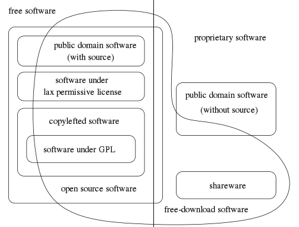

Open Source & Free Software
오픈소스와 자유소프트웨어 (Open Source & Free Software)
오픈 소스 소프트웨어와 자유 소프트웨어 둘다 모두 자유를 추구하지만 둘 사이에는 자유에대한 철학의 차이가 있습니다.
오픈 소스 소프트웨어에서 추구하는 자유는 소프트웨어를 (재)사용하고 적응시키기위한 실직적인 자유를 원하며 자유 소프트웨어에서 추구하는 자유는 지적 자유를 원합니다.
오픈 소스 소프트웨어 : 소스의 형태 자체를 중시
자유 소프트웨어 : 자유 소프트웨어 재단과 GNU 프로젝트와 관련된 소프트웨어에서 자유를 중시하는 의미에서 사용하는 말
자유소프트웨어재단은 오픈소스 소프트웨어라는 용어에는 ‘자유롭게 사용할 수 있는 권리’가 포함돼 있지 않다고 보고 자유 소프트웨어라는 용어를 사용하기를 권장합니다. 그렇다고 두 문화가 서로 적대적인 관계는 아닙니다.
GNU 프로젝트 공식 홈페이지에서는 “자유 소프트웨어 운동과 오픈소스 운동은 공동체에 있어서 두 개의 정당과도 같다”라며 “자유 소프트웨어 운동과 오픈소스 운동은 기본 원칙에 대해서 의견을 달리하지만, 모든 현실적인 방안에 대해서는 같은 생각을 갖고 있으며 세부적인 프로젝트에서 같이 협력하고 있다”라고 설명하고 있습니다. 특히 “자유 소프트웨어 운동에 있어서 우리는 오픈소스 운동을 적이라고 생각하지 않는다”라며 “우리의 적은 독점 소프트웨어”라고 강조합니다.

이전으로 다음으로